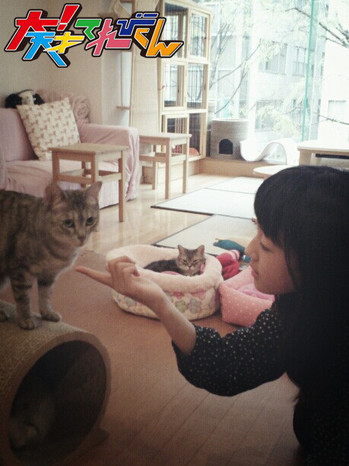
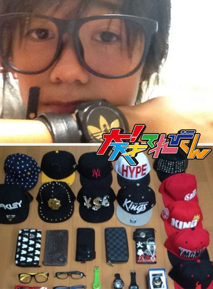

<<2013年8月 | トップページ | 2013年10月>>
2013年9月
【自分を動物にたとえるなら】長谷川ニイナ
★自分を動物にたとえるなら★
私を動物にたとえるならば…。アライグマ!!です♪
アライグマって、ああ見えて、実は「気性が荒い」と聞いたことがあります。
私も、喜怒哀楽がけっこう激しいんですよね～(笑)
「アライグマ」が出てくるアニメがありますけど、けっこう本物のアライグマとは見た目がかけ離れていてイメージが違いますよね!!
ちなみにですが、てれび戦士に何の動物に似ているかを聞いたら「クジャク」と言われました！
「アライグマ」とは全然違ってますね（笑）
★最近、勇気をふりしぼったこと★
私は「キムチ」がダメなんです（汗）
においが独特で、あまり好きではないんですよ。。。食わず嫌いってヤツですね!!
この間、そんなキムチに挑戦したんです！
でも、やっぱり…。ダメだあ～～～（-_-）
一口食べたら即アウトでした～。においまでは、なんとか頑張ったんですけどねぇ（汗）
…………。開き直ります、私！
皆さんの嫌いな食べ物は何ですか？？
投稿者:長谷川ニイナ | 投稿時間:18時00分 | カテゴリ：We are 大天才テレビジョン | 固定リンク


 " title="ソーシャルブックマークについて">
" title="ソーシャルブックマークについて">
※NHKサイトを離れます。
【自分を動物にたとえるなら】島田太一
★自分を動物にたとえるなら★
自分を動物に例えるなら、カモノハシです。
以前、顔を画面にうつして、どの動物に似てるかっていう物をやって、そう判断されたからです。
でも、自分で例えるなら、ゴリラ！
理由は、最近自分のからだがゴツくなってきた感じがするからです。
胸板が厚いって、よく人から言われることもあるので、自分の中ではゴリラが一番ゴツいからだというイメージがあるからです。
★最近、勇気をふりしぼったこと★
自分は人見知りとか恥ずかしがり屋なので、店員の人とかに接することに、ちょっと抵抗あるんです。
なので、買い物でレジとかに行くのには、いつも勇気が必要です。
この前、集めているシールが入ってるチョコが欲しくて、コンビニ行って、お金はどれくらいいるのかと思って、とりあえず5個とって買いました。
お金がたくさん余って15個買えたので、もう一回レジに同じ店員さんがいたので、
めっっちゃくっっちゃぁ勇気をふりしぼりました。
そしたら「同じ袋にいれてくださいっ」って言われて、すごくはずかしかったです。
たぶん、人生で勇気をふりしぼったランキング3位にはいります。
投稿者:島田太一 | 投稿時間:18時00分 | カテゴリ：We are 大天才テレビジョン | 固定リンク
" title="ソーシャルブックマークについて">
※NHKサイトを離れます。
【自分を動物にたとえるなら】岡田結実
★自分を動物にたとえるなら★
自分が思うには、おサルさんに似てると思います。
顔が!？笑。多分、バナナが好きだからと、おサルさんが好きだからですね。
でもプリクラとかでは、ネコみたいにもなります。というか、ネコに似てるって友だちに言われます。(=^・^=)ネコのほーが良い☆笑。
でも友達にはネコって言われるけど、てれび戦士にはゴリラって言われるっ(+_+)笑。
なんでかは、お母さんが、ゆいはゴリ子って言ったら、ずびーが、てれび戦士に広めてみんなに言われるというね…（泣）
だけど、太一とか、めぐたんが「なんで、ゆいがゴリラなの？！」って言ってくれてうれしい(^。^)
で、ずびーの答えが「分からない」っていうね笑。
まあ。オモシロイからいいんですけどね!！
あっきーと、ゆいと、えんめいちゃんでゴリラファミリー笑。
★最近、勇気をふりしぼったこと★
新しいチャレンジは、字をキレイに書くですかね。
まずは、字をキレイに書けるように毎日気をつけています。（＾◇＾）けっこう大変ですね。
学校のノートをとる時も、ちゃんと心がけています!!
大天ブログは、パソコンだから、今がんばっても意味がないのですが、ちょこっとがんばっています!!
でもっ大変です。（+△+）あと少しがんばります。美しい字になってみせますよ☆(^^)
一番キレイに書ける字は「美しい」です。がんばります!!
投稿者:岡田結実 | 投稿時間:18時00分 | カテゴリ：We are 大天才テレビジョン | 固定リンク
" title="ソーシャルブックマークについて">
※NHKサイトを離れます。
【自分を動物にたとえるなら】金子隼也
★自分を動物にたとえるなら★
こんにちは！
隼也です(^○^)
去年スタジオパークで「ダーウィンが来た！」のコーナーに自分がどの動物に似ているか判定する機械がありました！
僕に似ていた動物は「カンガルー」でした。
似てますか？（笑）
でも「なまけもの」にも似てるかも～？
家でゴロゴロして過ごしている時が幸せ（笑）
でも、やるときはやりますよー！
★最近、勇気をふりしぼったこと★
最近勇気をふりしぼってやった事は…
「大！天クエストⅢ 大天才王国物語」で鐘を鳴らす時にハサミを持っていない僕たちは出遅れました。
でもどうしても勝ちたかったので階段を猛ダッシュしたら、途中で転んでひざを強打しました。
すごく痛かったのですが、最後まで諦めないで勇気をふりしぼって頑張りました。
鐘を鳴らした後は痛くて座ってしまいました。痛かったけど勝てて良かったです。
投稿者:金子隼也 | 投稿時間:18時00分 | カテゴリ：We are 大天才テレビジョン | 固定リンク
" title="ソーシャルブックマークについて">
※NHKサイトを離れます。
【自分を動物にたとえるなら】中尾美晴
★自分を動物にたとえるなら★
鳥かな! しんや君が提案してくれはった。
理由は笑った時の声が鳥っぽいからだそう。
いやー☆☆ 鳥っていってもらうるのうれしい!
みれちゃんは白鳥って言ってくれた。
えらい美しい動物言ってくれたわ☆
ほんまに鳥に似てたら、うれしいな。
皆さんはどう思いますか？
★最近、勇気をふりしぼったこと★
高とびで75cmとべなかったのに!
なんとっ!（自まんできない高さですが（汗）
75cmとべましたーーーーーーーー!!
うれしかった! まぁ、75cmってダメな位置だけどね。
投稿者:中尾美晴 | 投稿時間:18時00分 | カテゴリ：We are 大天才テレビジョン | 固定リンク
" title="ソーシャルブックマークについて">
※NHKサイトを離れます。
【押忍！シャイ番長友情の旅】 第１２回 金子の日記
「押忍！シャイ番長友情の旅」１２回目の放送、ご覧いただけましたか？
今回は群馬県のブラジル人家族のもとにホームステイ。
最終日、バーベキューのお手伝いをし、フットサルの試合で大城さん一家とともに戦ったシャイ番長。
どこまで友情は深められたのか。
山あり谷ありの展開を、おなじみシャイ番長の日記でもお楽しみください。
左クリックをするとすると、原寸大になります。
投稿者:大天才テレビジョン社員１号 | 投稿時間:18時54分 | カテゴリ：お知らせ！ | 固定リンク
" title="ソーシャルブックマークについて">
※NHKサイトを離れます。
【自分を動物にたとえるなら】竹原司
★自分を動物にたとえるなら★
司です！自分を動物にたとえるなら「カメ」です。
僕はマイペースで、走るのがおそくてノロマだから、カメに似てるかなと思いました。
でもカメは歩くのがおそいと思われているけれど、本当は早いです。あの体の小ささにしては、とても速いと思います。
だけど僕は、ふつうに足がおそくてノロマだし、マイペースだから本当は似てないのかもしれません。
でもえさを食べている所を見ていると、やっぱり似てるかも…？と思ってきます。カメってけっこう大きい口でエサを食べるんですよ！
だから似てるかな？とちょっと思っちゃいます。
★最近、勇気をふりしぼったこと★
最近、勇気をふりしぼったことは、
給食できらいな「きりぼし大根」が出た時に勇気をふりしぼって食べたことです。
でもけっきょく食べれませんでした…。
でも何回かチャレンジすれば、絶対に食べれるようになると思います！
実は、なっとうが食べれなかったんですけど、何回かチャレンジしていたら食べれるようになったんです！
だから、きりぼし大根も食べれるようになると思います。
投稿者:竹原司 | 投稿時間:18時00分 | カテゴリ：We are 大天才テレビジョン | 固定リンク
" title="ソーシャルブックマークについて">
※NHKサイトを離れます。
【自分を動物にたとえるなら】延命杏咲実
★自分を動物にたとえるなら★
動物はネコが好きな延命です。
私は、クリオネだと思います。
クリオネは、とてもかわいいんですが、何かを食べるとき、とてもこわくなるんです。
私も食いしんぼうなのでとてもにていると思います!
でも、私はクリオネのかわいさはないので、かわいくなりたいです☆☆
★最近、勇気をふりしぼったこと★
実は、とってもうれしかったことがあります。
それは･･･ビート板で一人で泳げるようになったことです!
先生にたすけてもらおうとしたら来なかったので、
勇気を出して進んだら、なんとなく進んだんです!びっくり!
うれしかったですが、友だちにほう告すると、
「あっ、そう。」と、あっさりスルーされてしまいました･･･。くやしい!
投稿者:延命杏咲実 | 投稿時間:18時00分 | カテゴリ：We are 大天才テレビジョン | 固定リンク
" title="ソーシャルブックマークについて">
※NHKサイトを離れます。
最強アバターを決める「アバタイセン」～第5戦～
地上最強のアバターを決める超大型企画「アバタイセン」。今回は第5戦。
大天才テレビジョン内部にあるコンピューターが自動対戦した結果、
全世界に存在する全22888体のアバターの頂点に立ったのは…
埼玉県 りおこニャンさん
おめでとう！
ベスト８の対戦結果はこちらです（左クリックで拡大します）。

アバターの強さは、『パーツ』や『色』の組み合わせで変わります！
番組HPにあるトレーニングセンターで自分のアバターと、てれび戦士や出川特命Pの
アバターと対決させて、最強アバターになる組み合わせを見つけてほしい！
君も最強のアバターを作って対戦の時を待て！
アバターの制作はこちらから！
投稿者:大天才テレビジョン社員１号 | 投稿時間:20時10分 | カテゴリ：大！木曜LIVE | 固定リンク
" title="ソーシャルブックマークについて">
※NHKサイトを離れます。
【自分を動物にたとえるなら】黒澤美澪奈
★自分を動物にたとえるなら★
こんにちは(^-^)/ みれなです!
私は･･･自分ではむずかしいので、MCのお二人やてれび戦士に聞いてみました!
そしたら･･･「ねこ」!!という意見が多かったです!
たしかに「よく目が大きい」っていわれているので、ねこに似ているのかなぁ？笑
ねこって、色々なところに行くから、うらやましいですねぇ…!
私も、色々なところに行きたいです…☆
★最近、勇気をふりしぼったこと★
そうですね…。最近マラソンやっています。
トラックを走って、最後みんなでいっきに走るんですけど
いつも、最後になっちゃうんです…（泣）
でも、勇気を出したら、1位になりました☆
すごくうれしかった～☆☆☆
投稿者:黒澤美澪奈 | 投稿時間:18時00分 | カテゴリ：We are 大天才テレビジョン | 固定リンク
" title="ソーシャルブックマークについて">
※NHKサイトを離れます。
【自分を動物にたとえるなら】ソーズビー航洋
★自分を動物にたとえるなら★
ハワイのサル!！
見た目じゃなくて、性格です。
手相でも、僕は、勉強的にではなく、悪知恵的に、頭が良い線があるみたいなんです!！
さるも、悪知恵がはげしいというイメージがあるし、
ハワイのサルは元気なんで、似てるかなー？と思います。
たまに木から落ちるドジな感じも似ています!！
★最近、勇気をふりしぼったこと★
この前、お台場のお化け屋しきに、しゅんやと、太一と、れおくんと僕と４人で入りました!！
しゅんやと太一は、そっせんして行きたい行きたい!って言ってたんですけど、
僕とれおくんは2人で手相しに行くーとか言ってたんですけど、引きずり込まれて入りました(ﾉ_;)
1列じゃなきゃだめなんで、あの隼也が1番前に自分から行ってくれたんです!
虫嫌いの隼也が、かっこよかったーｗｗ
んで、隼也、僕、太一、れおくんの順番で行ったんですけど、
2番目の僕がなんとおふだを置く係になってしまいました(´△`)
ちょーこわかったです！
なんだかんだあったけど、良い夏の思い出です☆ Zv--。。
投稿者:ソーズビー航洋 | 投稿時間:18時00分 | カテゴリ：We are 大天才テレビジョン | 固定リンク
" title="ソーシャルブックマークについて">
※NHKサイトを離れます。
【自分を動物にたとえるなら】山田陶子
★自分を動物にたとえるなら★
性格はネコですかねぇ～(≡・×・≡)
顔は全然ちがうけど（笑）
マイペースなとことか似てますねぇ～
あとは、ゴロゴロしてるとことかですねぇ～
私はゴロゴロするのも趣味ですからねぇ～
それと、せまいとこも好きですねぇ～
アレ？ネコってせまいの好きですよねぇ～？
うん！！きっと好きだねぇ～！
そんな感じですねぇ～
あっ！！ネコグッズたくさんもってますねぇ～
顔は何だろ？┐('～`；)┌
ん～
日本人形ですねぇ～！！
動物じゃないしねぇ～(^－^)
Ｔｏｕｋｏでしたねぇ～

★最近、勇気をふりしぼったこと★
ハイ！！ありますよ～勇気をふりしぼりました！！
私、なんと、友達とカラオケに行きました Σ(´口｀;)
｢フツー｣みたいな方もいると思います（・ε・）
でも本当に私行ったことなくて。(￣･￣)
これまでは｢おしりかじり虫｣しか歌ったことがなかったのです。(￣･￣)
本気で楽しんだこと無かったんですね。
しかも！！
ソロで歌ってしまいました！！！！！！！
キャ－－－－－－＼(＞_＜)／
もう！！心臓が
キャ－－－－－－＼(＞_＜)／
そんなんですが
私、勇気をふりしぼりました。
おしまい(^-^)/
投稿者:山田陶子 | 投稿時間:18時00分 | カテゴリ：We are 大天才テレビジョン | 固定リンク
" title="ソーシャルブックマークについて">
※NHKサイトを離れます。
【MTK】「ゆーやけあきいろ」
9月16日にMTK「ゆーやけあきいろ」の放送が始まりました。
演奏しているのは鹿児島出身のバンド・ボヤケルズのみなさんです。
作詞・作曲はVo.の若松 剛さん。
若松さんは夕暮れや秋の曲が元々得意なのですが、歌い手の島田太一に合わせて、ちょっと和風なメロディに、希望と不安の両方をこめた言葉を乗せてくれました。
写真はレコーディングでの一コマ。
白いシャツが島田で黒いシャツが若松さんです。
空撮を多用した映像にもご注目ください。
投稿者:大天才テレビジョン音楽制作部 | 投稿時間:19時30分 | カテゴリ：We are 大天才テレビジョン | 固定リンク
" title="ソーシャルブックマークについて">
※NHKサイトを離れます。
【押忍！シャイ番長友情の旅】 第１１回 金子の日記
「押忍！シャイ番長友情の旅」１１回目の放送、ご覧いただけましたか？
今回は群馬県のブラジル人家族のもとにホームステイしているシャイ番長。
この日は弟のアントニ君のお守りを任せられました。
プライベートでは一人っ子のシャイ番長は無事につとめを果たせたのか？
山あり谷ありの展開を、シャイ番長の日記でもお楽しみください。
左クリックをすると、原寸大になります。
投稿者:大天才テレビジョン社員１号 | 投稿時間:18時54分 | カテゴリ：We are 大天才テレビジョン | 固定リンク
" title="ソーシャルブックマークについて">
※NHKサイトを離れます。
【自分を動物にたとえるなら】相澤侑我
★自分を動物にたとえるなら★
ん～、行動で例えるなら「サル」ですかね…｛^A^｝
よく「すばしっこい」って言われます！
でもこの間、学校の友達に「犬に似てる！」って言われて、
「あ、僕って犬に似てるんだ！」って思った 笑！
犬好きなんで（ミニチュアダックス！）うれしいです☆
でも猫舌の侑我でしたぁ！！！！！！
★最近、勇気をふりしぼったこと★
この間、勇気をふり絞って放送委員会に立候補してみました！
「放送委員会」っていうと、なんか放送室の機械の操作とかが難しそうだったりして、
ずっと広報委員会にしようと思ってたけど、友達に「放送委員は楽しいよ！」って言われたんで………
調子に乗って入りました！
でも先生がこわいんで、勇気をふり絞って入った (^o^)!
じゃあね～(^_-)-☆
投稿者:相澤侑我 | 投稿時間:18時00分 | カテゴリ：We are 大天才テレビジョン | 固定リンク
" title="ソーシャルブックマークについて">
※NHKサイトを離れます。
【自分を動物にたとえるなら】中里萌
★自分を動物にたとえるなら★
自分を動物にたとえると…
『なまけもの』ですかね（笑）
決めた理由は、外見では泣くほぼ内面ですね！！（笑）
ゆったりした、行動というのが、よく似ています。
私も家でゴロゴロしています！
そうは、いっても、ずーっとゴロゴロしているわけではなく、暇な時は、ゴロゴロです (-⊿-)
まぁ、そういうのも、いいですよ！！
★最近、勇気をふりしぼったこと★
最近、勇気をふりしぼったことは……
自分が情けないのですが（笑）
最近、家の用事で、学校に遅れて行かなければいけないことがありまして…
タイミング悪く、授業中で、皆が「し－－－－ん」としている状況で入らなければ、いけなく
勇気をふりしぼって、ガラッと扉を開けて「こんにちは！(^o^)」と言いました。
その時は恥ずかしかったけど(=v∇v=)場が盛り上がったので、良かったです。
投稿者:中里萌 | 投稿時間:18時00分 | カテゴリ：We are 大天才テレビジョン | 固定リンク
" title="ソーシャルブックマークについて">
※NHKサイトを離れます。
【ちょっと大人になったような気がしたとき】長谷川ニイナ
★ちょっと大人になったような気がしたとき★
中２になってから大人服も色々と買えるようになりました！！
子供服も、１６０cmぐらいなら着ることができますが、もうギリギリな感じです…。
子供服とはさよならかぁ。。。うれしいはずなんですけど、そういわれるとなんだか寂しいです～。
そういえば、自分の足が25.0cmになってしまったことに最近気づいてしまいました。
お母さんより、足大きい。ということで、これからの私は大人用で「L」を選ぶことになります。
足に関しては、これぐらいでいいかなぁ～★背よ伸びろ～！！
※今回、てれび戦士には「大人っぽい感じ」で写真を撮ってもらいました
★あなたはうどんが好き？そばが好き？★
私は絶対そば派です！！！というより「細いめん」が大好きなんです！
細いめんはツルツルっといけるし、すする時もあまり汁が飛ばない気がするんです！
だからラーメンも細めんのストレート！そうめんもその中で特に細いめんを選んで買います！
ということで、私はだんとつ「そば」です♪ ちなみにそばの方がヘルシーだしね！
皆さんはどちら派ですか？？
（次のブログもお楽しみに～）
投稿者:長谷川ニイナ | 投稿時間:18時00分 | カテゴリ：We are 大天才テレビジョン | 固定リンク
" title="ソーシャルブックマークについて">
※NHKサイトを離れます。
【ちょっと大人になったような気がしたとき】中尾美晴
★ちょっと大人になったような気がしたとき★
大人になったような気がした時。
それは何と！！
人生初のエステに行ったよ！
エステ言うても鼻だけやけどな。
めっちゃ気持ちよくってつるっつるになった！
そやけど、写真見て分かると思うけど。
何するにも美晴にはメガネが付きものみたい！！
★あなたはうどんが好き？そばが好き？★
うどん！
これめっちゃタイムリーな話題。
学校の課題作りで、うどんを特集したばかりやねん！！
うどん大好きやから。
家族旅行で香川まで本場のさぬきうどん食べに行ったで。
「アラビュ」うどん←前回の大天ブログ読んでね。
投稿者:中尾美晴 | 投稿時間:18時00分 | カテゴリ：We are 大天才テレビジョン | 固定リンク
" title="ソーシャルブックマークについて">
※NHKサイトを離れます。
【ちょっと大人になったような気がしたとき】野田真哉
★ちょっと大人になったような気がしたとき★
最近、アクセサリー集めにはまっています！
おしゃれを気にするってちょっと大人じゃないですか？！
アクセサリーといっても時計とかだてめがねとかですよ。
あとサイフとか、ぼうしもあったかな？
いろいろあるけど、こんな感じです！

ちなみにこの２つは、右はめぐたん、左はニイナちゃんにもらいました！
★あなたはうどんが好き？そばが好き？★
僕はうどんの方が好きです！
うどんが特別好きってわけではないけど、そばきらいなんです。。
なんというか味？がダメです。
で、うどんはとにかくたぬきうどんが好きです！（カップめんの）
学校から帰ってきたらまずカップめんですね。
それがたまらなくおいしいです！
投稿者:野田真哉 | 投稿時間:18時00分 | カテゴリ：We are 大天才テレビジョン | 固定リンク
" title="ソーシャルブックマークについて">
※NHKサイトを離れます。
【押忍！シャイ番長友情の旅】 第１０回 金子の日記
「押忍！シャイ番長友情の旅」１０回目の放送、ご覧いただけましたか？
今回は群馬県のブラジル人家族のもとにホームステイ。
シャイなハートを開いて、家族のみんなと友達になることは出来るのか。
金子に与えられたのは２泊３日のわずかな時間。
山あり谷ありの展開を、シャイ番長の日記でもお楽しみください。
左クリックをすると、原寸大になります。
投稿者:大天才テレビジョン社員１号 | 投稿時間:18時54分 | カテゴリ：We are 大天才テレビジョン | 固定リンク
" title="ソーシャルブックマークについて">
※NHKサイトを離れます。
【ちょっと大人になったような気がしたとき】中里萌
★ちょっと大人になったような気がしたとき★
私がちょっと大人になったと感じる時は…
小学生から中学生になり、バスや電車に乗ったとき、金額が倍になったことです。
パスモにチャージしたお金がすぐになくなってしまいます(￣▽￣;)
中学生はもう、大人料金なんです！！！
うれしいような、かなしいような……
※今回、てれび戦士には「大人っぽい感じ」で写真を撮ってもらいました
★あなたはうどんが好き？そばが好き？★
そばです！
「ざるそば」が大好きだからです。
わさびとねぎを入れ、つるっと食べるのが最高です(*´ω｀*)
おそばを食べ終わったら、必ず「そば湯」でおつゆも頂きま～す！
投稿者:中里萌 | 投稿時間:18時00分 | カテゴリ：We are 大天才テレビジョン | 固定リンク
" title="ソーシャルブックマークについて">
※NHKサイトを離れます。
「八重の桜」アバターパーツ！！
きょう９月８日（日）の大河ドラマ「八重の桜」のデータ放送で、アバターのコラボパーツを獲得するためのパスワードが発表になります。それでは今回ゲットできるパーツを紹介しましょう。
八重の桜「普段着」バージョン
この着物は会津木綿がモチーフ。
会津木綿とは福島県の会津地方の伝統工芸品で、
丈夫な生地と、パーツでも再現されているシマシマが特徴です。
劇中でも八重の普段着として使われていました。
八重の桜「武装」バージョン

八重が戦いで着用した服。
手に持っている銃は「スペンサー銃」といって、アメリカ南北戦争で使われた
７連発の騎兵銃です。重さは４キロあります。
服は戦死した八重の弟、三郎の形見の軍服。
向かって左側の腰についた黒い袋は小物入れ。
右側の斜めにかかっている横長の茶色い袋は、銃の弾薬を入れるためのものです。
パーツの獲得方法

☆「八重の桜」の放送中、データ放送の「ことば解説」のなかでパスワードを１文字ずつ発表します。
☆パスワードすべての文字をメモして、「大！天才てれびくん」のアバターメイカーのページへ。
☆パーツ選択画面で「桜」のマークが出ているものが「八重の桜」パーツです。

☆出てきた入力画面にパスワードを入れれば獲得完了です！
※「八重の桜」パーツは一体につき複数個あります（たとえば着物、わらじ、銃…のように）。上のようなアバターを作るにはすべてのパーツを獲得する必要があります。
投稿者:大天才テレビジョン社員１号 | 投稿時間:10時00分 | カテゴリ：お知らせ！ | 固定リンク
" title="ソーシャルブックマークについて">
※NHKサイトを離れます。
【川越シェフのスペシャルレシピ】
「大！天才クエストⅢ」４日目の放送、ご覧いただけましたか？
大天才王国乗っ取りを企てたフルサカを倒した出川村の勇者たち。
彼らにふるまわれたご褒美が、川越達也シェフ特製「コンビニ食材を使った豪華イタリアン」でした。
コンビニで買える手軽な食材が、ほんの一手間で豪華料理に大変身！
「ホントにおいしい」と、出川特命プロデューサーも太鼓判です。
ここで、料理のレシピをご紹介します。
簡単に作れるので、ぜひお試しあれ。
１．前菜「魚肉ソーセージのソテー トマトガーリックソース」
◆材料（１人前）
・魚肉ソーセージ（１本）
・たまねぎ（スライス10g）
・プチトマト（２コ）
・にんにく（みじん切り少々）
・さきいか（10g）
・水(50cc)
・バター(10g)
・セルフィーユ(適量)
◆作り方
１．フライパンにオリーブオイルを入れ、中火で一口大に切った魚肉ソーセージを焼く。
２．1.ににんにくを入れて香りを出し、たまねぎを加えて炒める。
３．2.にプチトマトと、刻んださきいかを加えて炒める。
４．仕上げに水とバターを入れる。バターが溶けたら出来上がり。
５．皿に盛りつけ、飾りにセルフィーユを乗せ、オリーブオイルを散らして模様を作る。
◆ポイント
・魚肉ソーセージは、こげ目がつく程度の焼き加減で。
・刻んださきいかで、ソースのうまみがアップ！
・バターで風味ととろみをプラス。
２．メイン 「チキンときんぴらごぼう タルタルソース風」
◆材料（１人前）
・フライドチキン（１個）
・きんぴらごぼう（20g）
・マヨネーズ（15g）
・コーヒー用クリーム（１個）
・レタス（千切り15g）
・温泉卵（１個）
・万能ねぎ（飾り用 適量）
◆作り方
１．ボウルにマヨネーズ、細かく刻んだきんぴらごぼう、コーヒー用クリームを入れて混ぜ合わせてタルタルソースを作る。
２．皿に刻んだレタスを盛り、フライドチキンを乗せで、1.のソースをかける。
３．2.の上に、温泉卵と万能ねぎをトッピングして出来上がり。
◆ポイント
・きんぴらごぼうは、チキンにからみやすいようできるだけ細かく。
・コーヒー用クリームで、まろやかなソースに！
３．デザート「バナナのキャラメルカスタード風味 ホイップクリーム添え」
◆材料（１人前）
・バナナ（1/2本）
・ホイップクリーム（大さじ１）
・プリン（1/2個）
・チョコレート・フレーク（お好み）
・ミント（飾り用 適量）
◆作り方
１．バナナを一口大にカットし、ボウルに入れる
２．プリンを茶こしなどで裏ごしする。
３．1.と2.を合わせて皿に盛り、ホイップクリームを乗せる。
４．チョコレート・フレークをトッピングし、ミントを飾って出来上がり。
◆ポイント
・プリンを裏ごしするとなめらかなクリームに変身！
・チョコレート・フレークで食感をプラス！
料理をする際には、包丁や火の元に十分お気をつけください。
投稿者:大天才テレビジョン社員３号 | 投稿時間:19時24分 | カテゴリ：お知らせ！ | 固定リンク
" title="ソーシャルブックマークについて">
※NHKサイトを離れます。
【ちょっと大人になったような気がしたとき】竹原司
★ちょっと大人になったような気がしたとき★
僕は、なんと「大！天」でロケに行ったときに
なんと一人で部屋にとまったんです！！（ホテル）
そのときは大人の階段のぼったなと思いました。
でもすごく怖くて、お母さんに３回電話しちゃいました。お風呂とトイレが一番怖かったです。
そして朝起きたらホッとしました。夜が終わったと思って安心しました。

★あなたはうどんが好き？そばが好き？★
僕は、うどんもそばもどっちも好きで、どっちが好き？と言われても…。
どっちも好きです。
うどんはカレーうどんや肉うどんなど 、ガッツリ系が好きで、
そばはざるそばが好きです。
どっちもどっちです。
ちなみに僕はラーメンが好きです！！
投稿者:竹原司 | 投稿時間:18時00分 | カテゴリ：We are 大天才テレビジョン | 固定リンク
" title="ソーシャルブックマークについて">
※NHKサイトを離れます。
【ちょっと大人になったような気がしたとき】山田陶子
★ちょっと大人になったような気がしたとき★
６年生になって、身長が１５０㎝になったぞ！
手や足が、ムキムキ大きくなったぞ！
足は、あっという間に、２４・５センチ！
手のひらは、長くなったぞ！
今も、ママと手をつなぐのが大好きで、ママの手をよく触ってるんだが、
血管がふくらんでいて、触ってみると、グニグニ動いて、不思議っていうか、気持ち良いっていうか・・・（●＾o＾●）
「いいな～」って思ってて、パンパンの私の手の甲を見て、「血管はどこ？」って、小さいころからずっと探してたの～。
そしたら、ふくらんではいないんだけど、青い色の線が、うっすら見えるようになって来たぞぞぞぞぞぞぞぞぞ＼(◎o◎)／！
最近、手の甲の青い血管を見ると、「私、大人かも～」って、思ってワクワクしたりするのだ～(^。^)y-.。o○
陶子だったのだ☆
★あなたはうどんが好き？そばが好き？★
時と場合によりますね(-_-;)
で、どっちも普通に好きな感じです。
うどんは、決まったお店のしか食べないし～しかも、たまにしか食べたくならない・・・。
蕎麦は、ざるそば！
夏にしか食べたくなりません。
基本、白い米命なんで、私(^_-)-☆
投稿者:山田陶子 | 投稿時間:18時00分 | カテゴリ：We are 大天才テレビジョン | 固定リンク
" title="ソーシャルブックマークについて">
※NHKサイトを離れます。
【速報・大！天才クエストⅢ 第３ステージ】
「大！天才クエストⅢ」３日目の放送、ご覧いただけましたか？
倒れた王様を救ったのは、あきえ村の勇者たち。
しかし、パズルカギの解錠ミッションでより活躍したのは、出川村の勇者たちでした。これがどう最終決戦に響くのか…？？
全ては明日明かされる！！
あす最終日は、国王が勇者たちにくださった「ご褒美」も生放送でお届け♪
最後の最後まで「大！天才クエストⅢ」お見逃しなく！！
投稿者:大天才テレビジョン社員１号 | 投稿時間:18時54分 | カテゴリ：お知らせ！ | 固定リンク
" title="ソーシャルブックマークについて">
※NHKサイトを離れます。
【ちょっと大人になったような気がしたとき】ソーズビー航洋
★ちょっと大人になったような気がしたとき★
1人暮らしについて考えてくるようになりました！
前、逗子に行きました！とっても新鮮な空気で、海もめちゃめちゃ綺麗で、お家も住宅街もよくて、とにかく良かったんです。だから、ここ住みたぁぁいって思ったんです！
でもこんな良い所なら、1人でのーんびり暮らしたいなぁーっておもいました！
そして、東京で家の中を自分で考えて、そのまま建ててくれるようなシステムがあるらしいんです！
つまり、キッチンはここに置いてお風呂はその横に置いて…みたいなことを、決められるんです！それも良いなー面白ソー(￣▽￣)っておもったり（≧∇≦）
でも結果1人じゃ怖いからやっぱ実家暮らしでいいや。と思ってるソーズビーでした笑
★あなたはうどんが好き？そばが好き？★
僕は、断然うどんです！僕は、太くて弾力がある麺が好きなんです！
もちもちとした食感と、太くて口の中いっぱいになるあの幸せ
蕎麦の方が健康的だけど、太る物ほど美味しいっていうじゃないですか？笑
でも、1番好きなうどんの麺種は、太くてうすいうどんです！
ほうとうみたいな感じのやつ！あの麺は、たまりません(´Д` )あれを、丸めて口いっぱいに入れるのが良いんです！贅沢食い！
そんなうどんだけで嬉しくなる単純なズビーでした！
Ps:蕎麦の中でも、ワンコ蕎麦に挑戦したいです！
投稿者:ソーズビー航洋 | 投稿時間:18時00分 | カテゴリ：We are 大天才テレビジョン | 固定リンク
" title="ソーシャルブックマークについて">
※NHKサイトを離れます。
【速報・大！天才クエストⅢ 第２ステージ】
「大！天才クエストⅢ」第２ステージの放送、ご覧いただけましたか？
王を病から救う秘薬を錬成するため、大天才通りを奔走し、
魔術師とともに儀式を行った出川村とあきえ村の勇者たち。
あきえ村の勇者たちが、秘薬の錬成に見事成功しました。
ここで、秘薬の錬成に使われた材料を紹介します。
▼大天才王国・北部地方、おとぎ村の特産品「鬼の角」。
毎年生え替わるものを収穫するそうです。
▼大天才王国の森に生息する「黒オオトカゲのしっぽ」。
魔術師しか姿を見たことがない伝説の生物です。
▼北の海底に、海藻に混じってひっそりと生えている「水中木（すいちゅうぼく）の根」。
海女さんが潜って採っています。
▼大天才王国・西部地方の中日山（なかびやま）に生息する龍の鱗。
七つのボールとの交換で、龍からもらえるそうです。
４つの材料
「おにのつの」
「くろおおとかげのしっぽ」
「すいちゅうぼくのね」
「りゅうのうろこ」
が王様の病を治す“おくすり”を作る材料でした。
さて、最後は、物語に登場した大天才通りの町の子どもたちとの記念撮影でお別れです。
明日は「大！天才クエストⅢ」第３ステージ！
王の病は治るのか？そしてさらなる危機が！？
投稿者:大天才テレビジョン社員１号 | 投稿時間:18時54分 | カテゴリ：お知らせ！ | 固定リンク
" title="ソーシャルブックマークについて">
※NHKサイトを離れます。
【ちょっと大人になったような気がしたとき】黒澤美澪奈
★ちょっと大人になったような気がしたとき★
こんにちは！
みれなで～す(^o^)
私、比較的なんでも食べれるんですけど、
魚のお刺身や生ものが、苦手なんです。
焼いたり、煮たりしたら、大丈夫なんですけど…、生はどうも(^-^;
学校の移動教室で地引き網をした時も、
大漁で夕食に舟盛りが出たのに、私は箸をつけられず(>_<)
だけど、みれなも来年は中学生、
なんでも食べれるようになりたい！と思うお年ごろであります。
つい先日、お父さんとお母さんから
「この目鯛のお刺身少したべてみたら？絶対おいしいから！」
と言われ、しぶしぶ食べてみました…
わぁ～～～～～～～～おぅ☆！！
それが、すごくおいしかったんです！
お刺身は、醤油で食べるイメージが強かったんですけど…
今回は、ポン酢と私の好きな万能ネギを薬味にして食べました！
そうしたら、甘くて、お刺身の臭みがまったくなく、
とても爽やかなお味でした！
これで少しは、大人に近づいたかな？
いつかは、お刺身の舟盛りにチャレンジ出来るようになりたいですo(^-^)o
★あなたはうどんが好き？そばが好き？★
私は、「そば」も「うどん」も、大好きです～♪
でも冬の寒い日に、お母さんが作ってくれる『鍋焼きうどん』が最高なんです！！
その鍋焼きうどんには、きのこや貝柱など、私の好きなものが、いっぱい入っているんですよ！
お腹もいっぱいになるし、
心も体もあったまりますo(^-^)o
あぁ！
早く冬が来ないかな…♪
投稿者:黒澤美澪奈 | 投稿時間:18時00分 | カテゴリ：We are 大天才テレビジョン | 固定リンク
" title="ソーシャルブックマークについて">
※NHKサイトを離れます。
【速報・大！天才クエストⅢ 第１ステージ】
「大！天才クエストⅢ」第１ステージの放送、ご覧いただけましたか？
与えられた試練に挑んだあきえ村の勇者たちは、「きれいな錬成の書」を手に入れました。

一方、出川村の勇者たちは「ぼろい錬成の書」を入手。

錬成の書を解読し、国王を病から救う秘薬を作り出すのは、どちらの村の勇者たちなのか？
ところで…ブログを見ている皆さんへ向けて、特別に！大天才城の地図を公開します。
これをよ～く見ておくと、水曜放送の第３ステージをより楽しめるはず…
（※左クリックで拡大表示されます）
4日間連続「大！天才クエストⅢ」お見逃しなく！！
投稿者:大天才テレビジョン社員１号 | 投稿時間:18時54分 | カテゴリ：お知らせ！ | 固定リンク
" title="ソーシャルブックマークについて">
※NHKサイトを離れます。
【ちょっと大人になったような気がしたとき】相澤侑我
★ちょっと大人になったような気がしたとき★
侑我で～す。
僕はこの間、1人で自転車に乗って習い事に行きました(^o^)/
今まではお母さんと2人で自転車に乗って行ってたのですが、お母さんが用事があって行けなかったので………
1人で約20分の道のりを行きました^_^
電車の駅で言ったら、駅3つ分ぐらいありますW(`0`)W
結構遠いでしょ＼(//∇//)／
でも、1回行ったからもう大丈夫＼(^o^)／
これからも1人で行けますっ☆
それになんだか、もう何もかもぜ～んぶ1人でできるような気がしちゃいました！
留守番も、買い物も、食事も！
だってもう5年生なんだもん(^з^)-☆
教会に行った時、自分が結婚するのを想像してみた(^_^*)！
う～ん、まだよくわかんないや！
※今回、てれび戦士には「大人っぽい感じ」で写真を撮ってもらいました
★あなたはうどんが好き？そばが好き？★
僕はそば派でございます！
特にざるそばは、細麺が好きです！

ズズズッていう音がイイですねぇ……
やっぱりそばって、勢いよく食べれるじゃないですか*＼(^o^)／*♪
(☆▽☆)
食べたくなってきてしまった(=ﾟωﾟ)ﾉ
いつもざるそばばっかり注文してたら、お母さんに「お願いだから違うもの注文して」って言われた(＞人＜;)
家でもそば食べてるよ(｀･Д･)」
投稿者:相澤侑我 | 投稿時間:18時00分 | カテゴリ：We are 大天才テレビジョン | 固定リンク
" title="ソーシャルブックマークについて">
※NHKサイトを離れます。
ページの一番上へ▲


{kind=link}
{kind=link}
{kind=link}
{kind=link}
{kind=link}
{kind=link}
{kind=link}
{kind=link}
{kind=link}
{kind=link}
{kind=link}
{kind=link}
{kind=link}
{kind=link}
{kind=link}
{kind=link}
{kind=link}
{kind=link}
{kind=link}
{kind=link}
{kind=link}
{kind=link}
{kind=link}
{kind=link}
{kind=link}
{kind=link}
{kind=link}
{kind=link}
{kind=link}
{kind=link}
{kind=link}
{kind=link}
{kind=link}
{kind=link}
{kind=link}